What the workflows made.
Saved images, stories, video and music, with the inputs that produced them. Viewing is free. Run your own version with your NanoGPT key and balance.
Storyboard relay
Muse establishes the postal robot. Nano Banana stages the next scene but duplicates its seedling. Gemini identifies that error; Muse Edit receives both frames and the critique, removes the duplicate plant and improves the pose. A fresh Gemini review still flags the closed hatch. This is a fixed revision demonstration with visible limits, not a guarantee of perfect continuity.

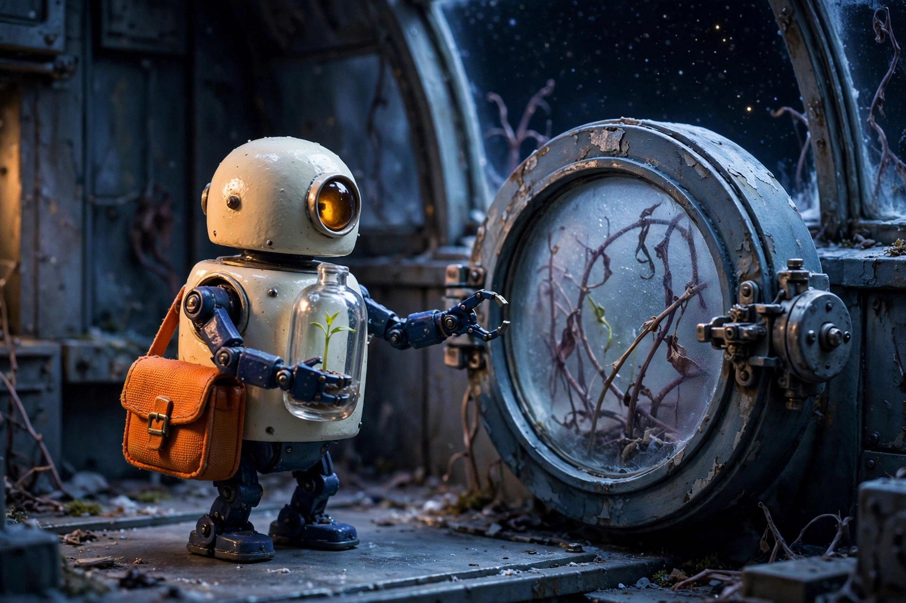

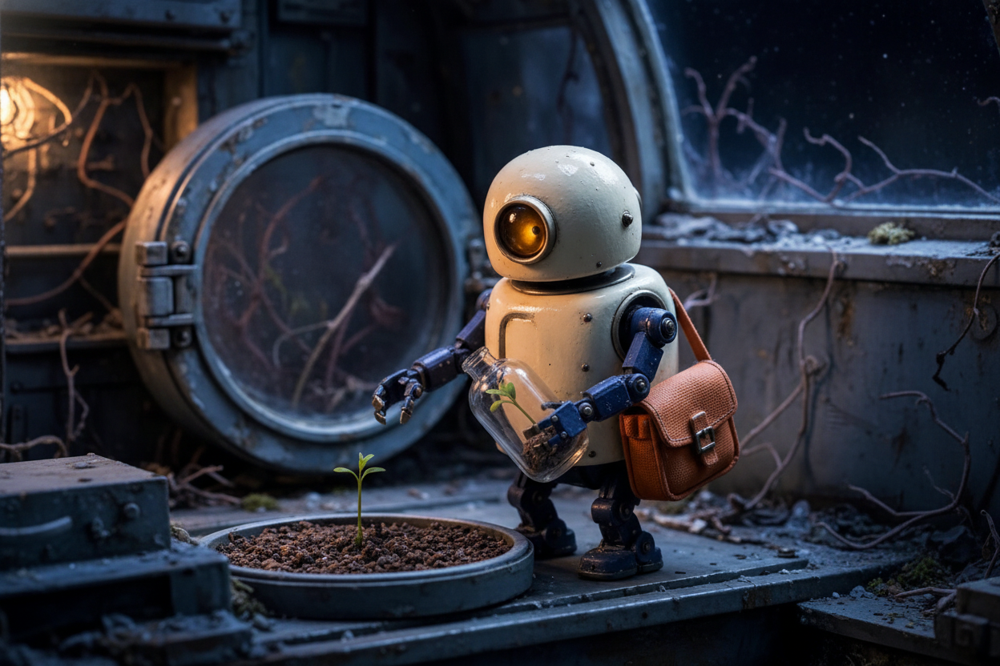

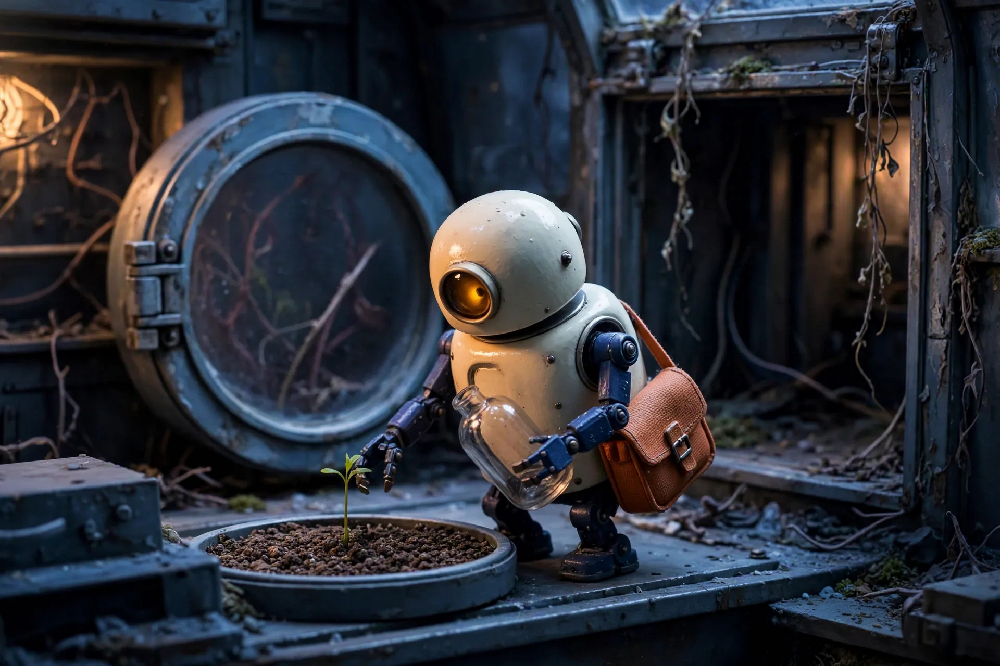
What Gemini asked the repair model to change
**Visible Story Action:** - **Frame 1:** Outside the greenhouse, the robot stands holding a sealed seedling capsule while reaching for the locked circular hatch. - **Frame 2:** The robot stands over a circular soil tray containing a planted seedling, reaching toward it with an empty gripper while holding a capsule containing a second seedling. **Mismatches:** 1. **Prop Duplication (Seedling):** Frame 1 has one seedling inside the capsule. Frame 2 shows two seedlings simultaneously—one planted in the tray and an identical duplicate still inside the glass capsule. 2. **Capsule State:** Frame 1 shows a sealed capsule. Frame 2 requires an opened, empty capsule, but it remains sealed with soil and a plant inside. 3. **Location / Hatch State:** Frame 1 shows the circular hatch closed from the exterior. Frame 2 keeps the robot in the same hallway with the circular hatch still closed, rather than inside the greenhouse with the hatch standing open behind it. 4. **Robot Pose:** The robot is upright and standing in Frame 2, rather than crouched beside the soil tray. **Smallest Specific Correction:** Remove the duplicate seedling and dirt from inside the glass capsule so it is visibly open and empty, swing open the circular hatch behind the robot to show it has entered the greenhouse, and adjust the robot into a lower crouching posture over the soil tray.
Fresh review of the repaired frame
### Story Beat Frame 1 establishes the postal robot arriving outside the locked greenhouse, seedling safely encapsulated. Frame 2 clearly conveys the next beat: the robot leans forward over a soil tray inside the compartment, having successfully transferred the seedling to the soil while clutching the empty glass jar. ### Continuity Analysis | Feature | Frame 1 | Frame 2 | Status | | :--- | :--- | :--- | :--- | | **Robot Design & Palette** | Cream enamel dome, single amber eye, blue articulated limbs, orange satchel. | Identical proportions, materials, satchel buckle, and blue/cream coloring preserved. | Consistent | | **Glass Capsule & Seedling** | Single seedling enclosed inside sealed glass jar held in right gripper. | Seedling is planted in soil tray; glass jar is held empty in right gripper. Exactly one plant/capsule visible. | Consistent (Intended state change) | | **Greenhouse Hatch** | Closed round hatch with frost/vines, locked latch on right, hinge on left. | Round hatch structure visible in background, though seemingly still closed/glazed rather than swung open. | Changed (Spatial drift) | | **Environment & Lighting** | Tactile stop-motion aesthetic, cool indigo fill with warm amber accent lighting. | Perfectly matched textures, grit, and directional practical lighting. | Consistent | ### Director's Note The character design, tactile miniature finish, and prop tracking (plant removed from jar) translated seamlessly. For absolute narrative clarity, the round hatch directly behind the robot should be visibly open/swung back into the room rather than appearing closed with its original frosted pane.
Inputs and run details
First scene
First frame of an original two-scene story. A tiny postal robot has a rounded cream enamel body, one round amber eye, short dark-blue legs, and an orange mail satchel. It carries one clear glass capsule containing a single bright-green seedling. Outside a locked circular hatch of an abandoned orbital greenhouse, the robot reaches toward the small mechanical latch beside the door with one gripper while holding the capsule securely with the other. Dormant vines are visible through frosted glass; a curved station window reveals a black starfield. Wide 3:2 medium shot with the full robot, capsule and hatch visible. Tactile stop-motion miniature photography, indigo shadows and warm amber practical light. One robot and one capsule. No lettering, captions, split screen, panel borders or watermark.
Next beat
Create the next story beat inside the greenhouse. The robot is now crouched beside a circular soil tray, carefully placing the same bright-green seedling into the soil with one gripper; its other gripper holds the opened, now-empty glass capsule. The orange satchel remains visible. The round hatch stands open behind it. Frame the planting action clearly in a new medium shot. This is a visibly different action and location within the same world, not a restyle or wider crop of the doorway scene. Retain the tactile miniature look and indigo/amber light. No lettering or extra characters.
Continuity rules
Keep the same robot's rounded cream body, single round amber eye, dark-blue legs, orange satchel and relative proportions. Track the one glass capsule and one green seedling: the closed capsule in frame 1 should be opened and empty during planting in frame 2, with no duplicate seedling or capsule. Keep the miniature materials and indigo/amber lighting recognizable. Frame 1 shows an arrival at a closed hatch; frame 2 must clearly show planting inside after the hatch opens.
Open workflow ↗How it worksDownload workflowOriginal sampled graph
Another run: A crab catches the windSee what the same workflow made with different inputs ↓
A red crab carries a yellow kite from a jetty to a pink sandbar. Muse establishes the cut-paper world; Nano Banana stages the flying action; Gemini critiques the draft; Muse Edit makes one revision from both actual frames and the critique. The repair restores the spool and pink sky, while the kite bow count and placement still fail the brief. A fresh review flags that remaining drift. The opening, draft and repaired image are retained so the improvement and its limits can be compared directly.

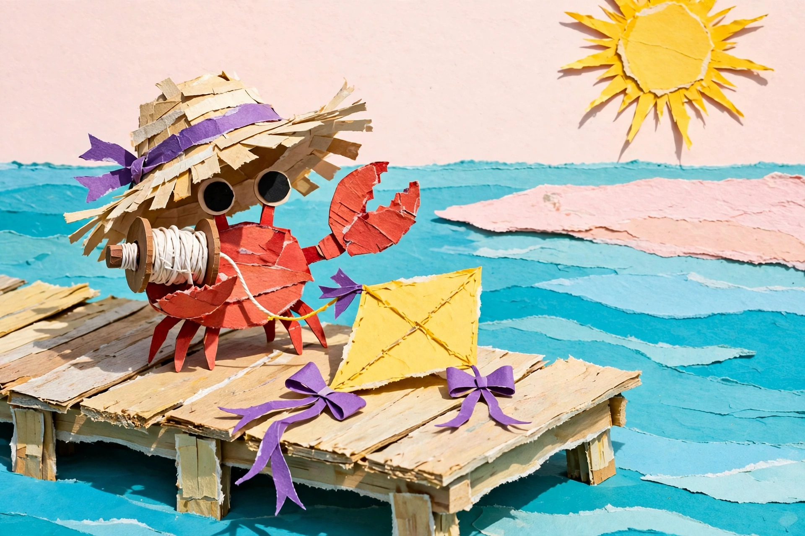

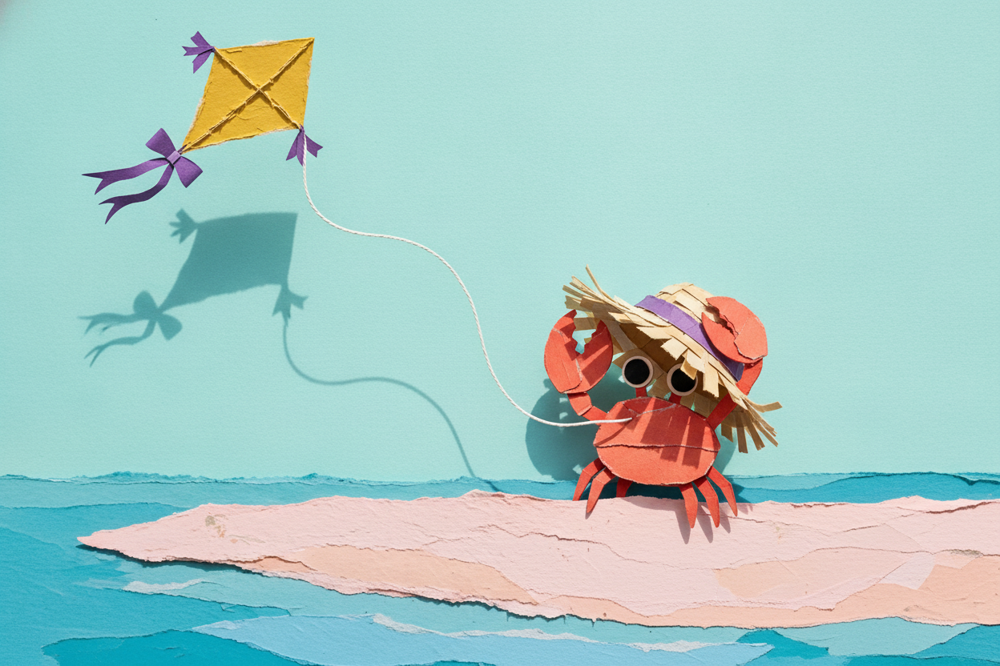

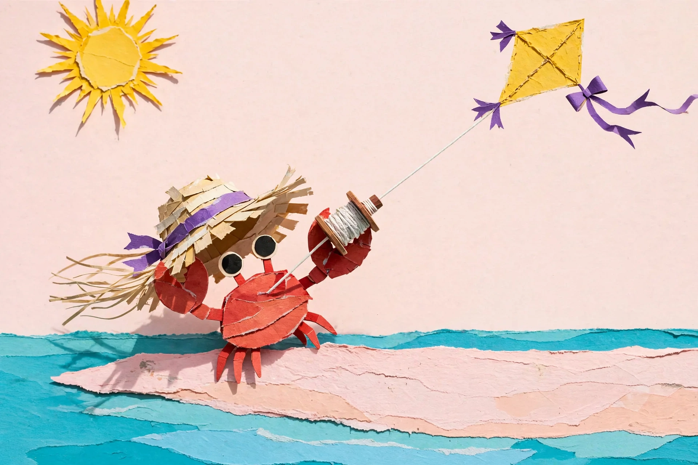
What Gemini asked the repair model to change
**Visible Story Action** - **Frame 1:** On a sunlit wooden jetty, a red crab in a straw hat holds a white string reel with one claw, standing beside a resting yellow kite with loose violet bows, gazing toward a distant pink sandbar. - **Frame 2:** Relocated to the pink sandbar, the crab flies the yellow kite in the sky, holding its hat with its left claw while the kite string leads down toward its body/right side. **Continuity Mismatches** 1. **String Reel Missing / Improper Attachment:** Frame 1 features a prominent spool reel held in the claw. In Frame 2, the reel has vanished entirely; the kite string disappears behind the crab’s body rather than connecting to a held reel. 2. **Kite Bow Count / Placement:** In Frame 1, two large violet bows lie detached (with one small purple attachment at the kite's top edge). In Frame 2, the kite has three purple bows (two at opposite side points, one on the tail ribbon) instead of exactly two tail bows. 3. **Environment/Sky Color:** Frame 1 has a pale pink sky with a yellow torn-paper sun. Frame 2 completely changes the sky to solid cyan/turquoise with no sun visible. **Smallest Specific Correction** Place the wooden string reel into the crab's raised right claw so the flying line visibly spools from it, and adjust the kite to have exactly two violet bows on its tail.
Fresh review of the repaired frame
### Story Beat Frame 1 establishes the crab on the wooden pier holding the spool, looking toward the distant sandbar with the kite resting nearby. In Frame 2, the action successfully advances: the crab relocates to the pink sandbar, holds down its straw hat against the wind with one claw, and flies the yellow diamond kite with the other via a taut white string. The new wind-blown action reads clearly. ### Continuity Table | Feature | Frame 1 | Frame 2 | Status | | :--- | :--- | :--- | :--- | | **Location / Surface** | Sun-bleached wooden jetty | Flat pink torn-paper sandbar | Consistent (intended beat change) | | **Crab Anatomy & Hat** | Red torn-paper body, 2 claws, straw hat with purple band | Same red body, claws, straw hat with purple band | Consistent | | **Kite Design & State** | Resting yellow diamond kite, purple tail accents | Flying yellow diamond kite aloft, taut string | Consistent (intended state change) | | **Spool / Hand-off** | Spool held in right claw | Spool switched to raised left claw | Changed | | **Bow Count / Tail** | 2 large violet bows unattached/nearby, small purple tip | 1 purple ribbon bow on kite tail, extra corner tassels | Changed | | **Art Style & Media** | Torn paper collage, bright pastel tones | Torn paper collage, matching paper textures/colors | Consistent | ### Director's Note The cut-paper texture, character identity, and dynamic wind motion carry over exceptionally well. For future iterations, ensure the kite tail preserves the exact count and design of the two purple ribbon bows rather than shifting to corner tassels.
Inputs for this version
First scene
First frame of an original two-scene story. A small red crab kite-maker stands on a sun-bleached wooden jetty over a shallow turquoise salt lagoon. It has two large claws, four small walking legs visible, round black eyes, and a floppy straw hat with a violet ribbon. One claw holds a wound white string reel; beside it rests a single yellow diamond kite with exactly two violet tail bows. The crab looks toward a flat pink sandbar across the water. Bold cut-paper collage, crisp torn-paper edges, coral-red, yellow, turquoise and pale pink, bright overhead sun. Wide 3:2 composition; entire crab, reel, kite and jetty visible. No robots, space stations, glass capsules, plants, text, panel borders or watermark.
Next beat
Create the next story beat on the pink sandbar across the lagoon. The same crab braces its legs and leans backward as the yellow diamond kite lifts overhead in a strong breeze. The white string visibly connects the kite to the reel in one claw; the other claw keeps the straw hat from blowing away. Exactly two violet bows remain on the kite's tail. Show the kite fully in frame and make the new wind-driven action clear. Retain the crisp cut-paper collage and sunlit coral/yellow/turquoise/pink palette. This is a new story action, not the original jetty picture with a changed background. No extra crabs or kites, lettering or panel borders.
Continuity rules
Preserve the red crab's body shape, black eyes, two claws, straw hat and violet ribbon. Keep one yellow diamond kite, two violet tail bows, and the white reel/string. The string should connect reel and kite in frame 2; the kite must be flying rather than resting. The scene moves from a wooden jetty to a pink sandbar. Preserve cut-paper materials, crisp edges and bright sunlit palette; do not inherit any robot, greenhouse or space-scene details.
Tiny world, full soundtrack
Muse builds a walnut-shell watermill; Wan animates that image; Mirelo watches the actual silent take and adds its sound. The 480p result is five seconds long. Sampled frames retain the mill and turning wheel; a separate audio model describes rushing water and faint friction, without speech or music. The audio ends sharply. Exact audiovisual sync and seamless looping were not established.

Inputs and run details
World
A handmade miniature walnut-shell watermill on a mossy stone beside a tiny stream. One large copper paddle wheel is attached to the right wall of the walnut house; a thin stream pours onto its paddles. Warm amber window, fern fronds, clay mushrooms, soft overcast morning. Tactile stop-motion set, macro lens, horizontal composition. Entire wheel visible, no people, no lettering.
Motion
One continuous locked-off macro shot. The copper waterwheel turns slowly and steadily as the stream runs over its paddles. Small ripples travel downstream. Preserve the walnut house, window, wheel and ferns from the source image. No camera travel, scene cuts, new objects or speech.
Open workflow ↗How it worksDownload workflowOriginal sampled graph
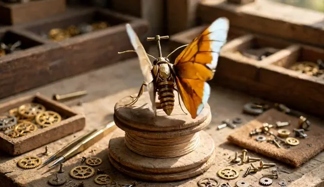
Another run: The watchmaker’s mothSee what the same workflow made with different inputs ↓
Muse creates a brass moth on a wooden spool; Wan animates its wings; Mirelo adds sound from that actual silent clip. The five-second film keeps the moth and spool, but the orange wing underside changes the intended folded-metal material. A separate audio-model review describes rhythmic metallic friction and clicks without speech or music, and notes an abrupt ending. That review did not see the video: precise audiovisual synchronization and seamless looping are not established.

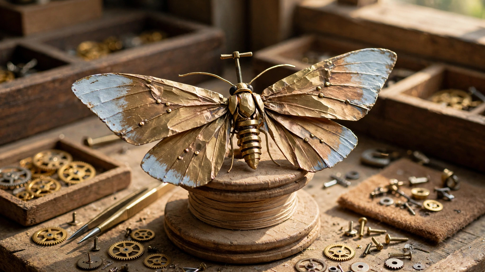
Separate model-assisted audio review
Here is a review of the audio clip: ### Timeline of Events - **00:00.00 – 00:04.90:** A recurring sequence of metallic, rhythmic friction and clicking sounds. Every approximately 1 to 1.3 seconds, there is a distinct metallic scraping/draw sound followed by sharp clicks and an impact (at roughly 00:00.3, 00:01.5, 00:02.8, and 00:04.0). - Between these main rhythmic strikes, a faint, high-frequency hiss/air noise persists in the background. - **00:04.90 – 00:05.10:** The clip ends abruptly in silence right after the fourth mechanical cycle decays. ### Speech and Music - **Speech:** None. - **Music:** None. ### Glitches, Clipping, or Abrupt Cuts - **Clipping/Distortion:** None detected; the high-frequency transients are crisp without digital distortion. - **Abrupt Cut:** The audio cuts off sharply at the end of the file around 00:05.10.
Inputs for this version
World
A handmade miniature brass moth with two broad folded-metal wings perched on a wooden spool in a sunlit dry watchmaker workshop. A tiny winding key protrudes from its back. Sand-colored wood, amber brass, pale blue painted wing tips. Tactile stop-motion set, macro lens, entire moth clearly visible, horizontal composition. No water, plants, windows, lettering or people.
Motion
One continuous locked-off macro shot. The brass moth gently opens and closes both hinged wings twice while staying on the spool. Its winding key makes a small turn. Keep the same body, pale blue wing tips and dry wooden table; no flight, extra wings, camera travel or cuts.
Game character kit
Furnace knight reference plus four-quadrant parts. Magenta is for cutout.

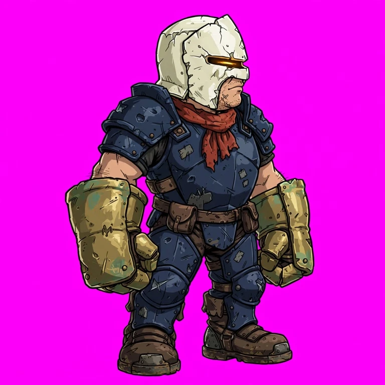

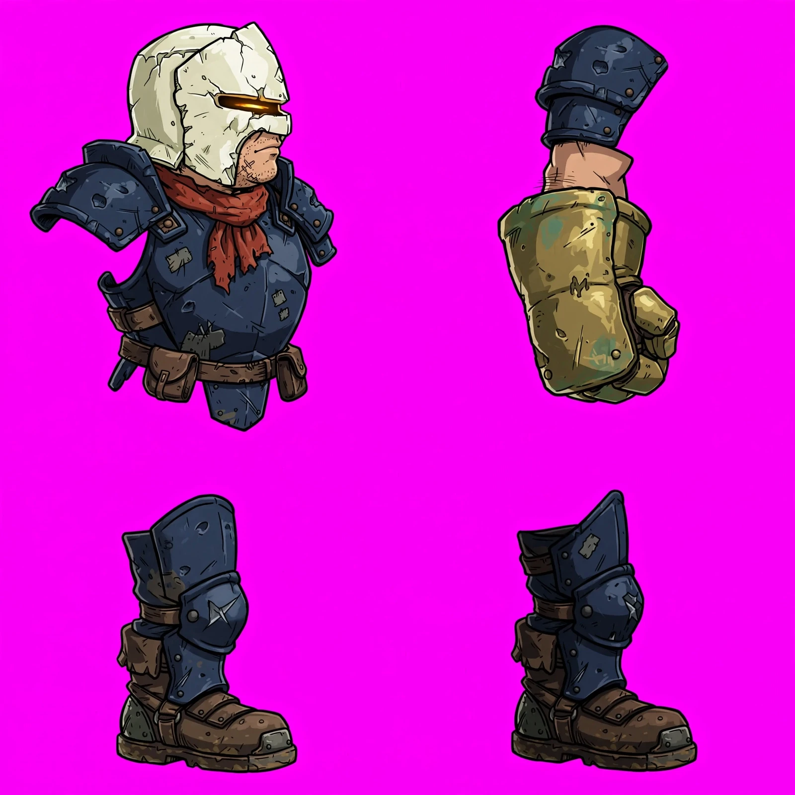
Inputs and run details
Character
A compact furnace knight with a cracked ivory helmet, narrow glowing amber visor, dark navy armor, a short rust-red scarf, oversized weathered brass gauntlets and heavy boots. Determined, heavy, battle-scarred. No weapon, no wings. Stylized hand-painted 2D action-platformer art with strong outlines and an instantly readable silhouette.
Open workflow ↗How it worksDownload workflowOriginal sampled graph
Compare four image models
Four versions of the same bicycle-workshop poster. Compare the exact lettering and the tire-lever shapes. These saved results use Krea for contender 2; the current workflow uses Flare, which has not been sampled here.

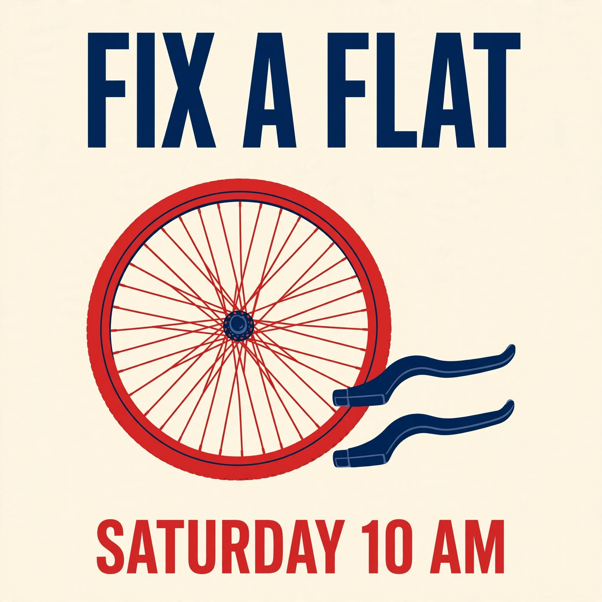

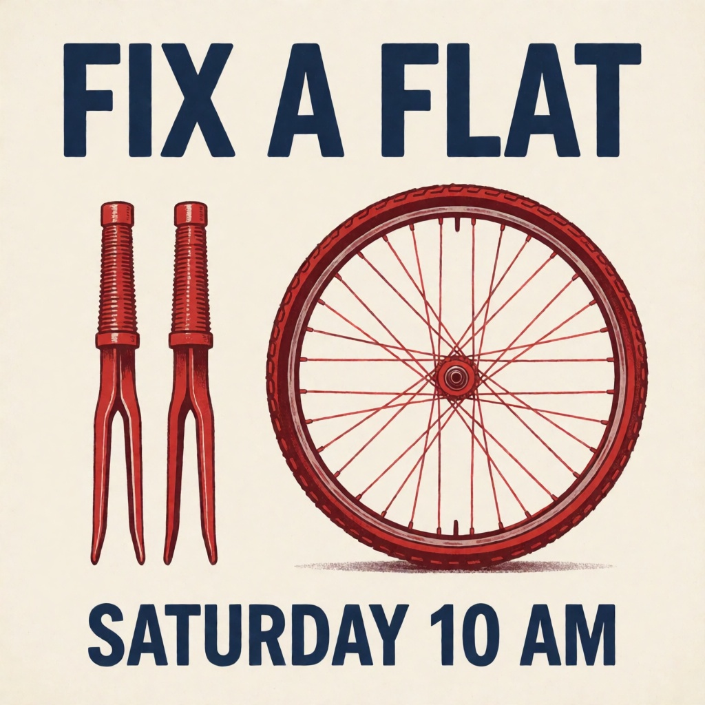

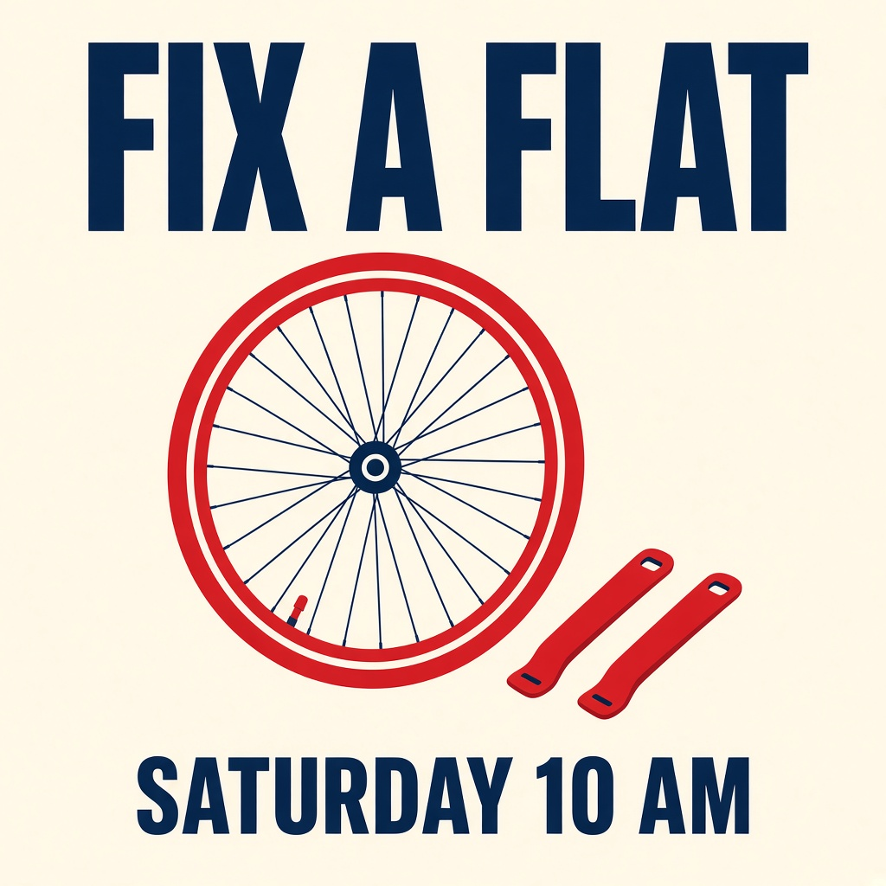

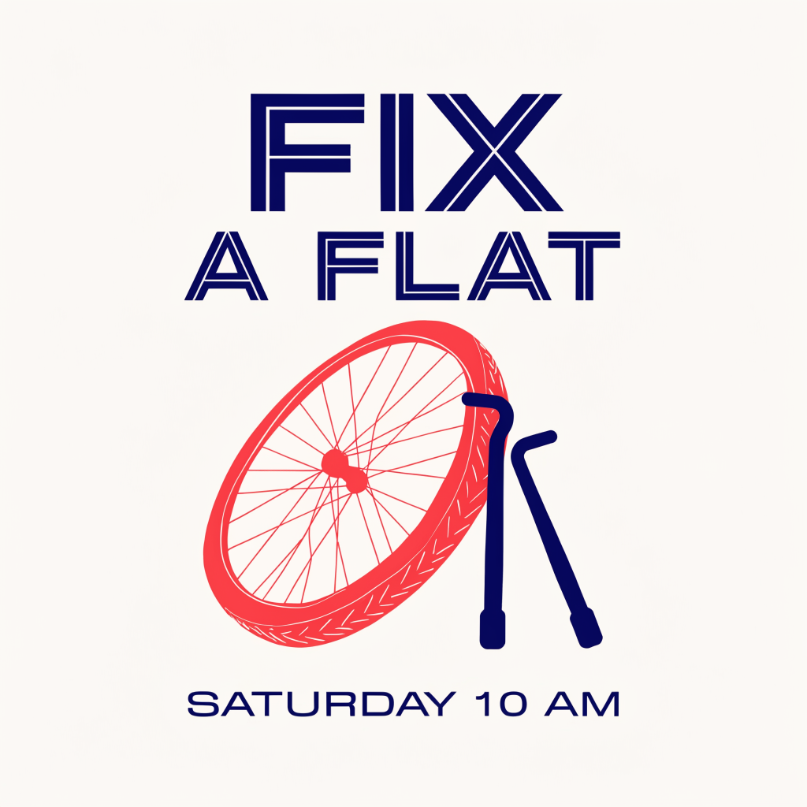
Inputs and run details
Shared test brief
Create a square poster for a bicycle repair workshop. Exact heading: FIX A FLAT. Exact footer: SATURDAY 10 AM. A single red bicycle wheel rests beside two tire levers on a cream background. Flat editorial illustration, navy and red palette, clear hierarchy, large readable type. No extra words or objects.
The shared brief is unchanged. Contender 2 now uses Flare in place of Krea; its current output and run cost will differ from this saved comparison.
Open workflow ↗How it worksDownload workflowOriginal sampled graph
From scene to short clip
Five sampled frames keep the mug and desk stable while the steam changes. Watch the clip to judge the motion; a seamless loop is not guaranteed.
Inputs and run details
Still brief
A ceramic mug of hot tea on an oak desk beside a closed notebook. Soft morning window light from the left, plain warm-gray wall, close three-quarter view, entire mug visible, clear handle silhouette, faint steam above the tea, no text or logos.
Motion brief
Locked camera for five seconds. A thin wisp of steam rises slowly from the tea and curls gently in the window light. The mug, desk and notebook remain completely still. Preserve their shape and placement; no cuts, new objects or camera motion.
The current workflow uses the provider’s renamed video model ID. The original sampled graph is preserved below.
Open workflow ↗How it worksDownload workflowOriginal sampled graph
Sing: trip-hop about the singularity
A 2:35 song from the original singularity/trip-hop idea and preferred-band references. The generated lyrics, arrangement and avoid-list are saved below. The waveform preview comes from this recording. A model-assisted listening check described lo-fi alternative pop with a breathy female vocal, so the requested trip-hop style is only partly realized. Listen to judge the result yourself.
[Verse 1] Streetlight hums through venetian blinds Your voice downloads slow down the line You learned to love from a thousand minds Now you wait for me to catch up in time [Chorus] But you're already gone, already gone Left your shadow in the song Already gone, already gone I keep dancing with the dawn You don't need me anymore [Verse 2] Rain on concrete, static in the walls I count your heartbeats in phone calls You said forever like a fire exit sign I was human, you were half-divine [Chorus] But you're already gone, already gone Left your shadow in the song Already gone, already gone I keep dancing with the dawn You don't need me anymore [Bridge] Turn the volume down, turn the century low Everything we were, somewhere in the code If I unplug the night, will you come back slow Come back slow [Chorus] 'Cause you're already gone, already gone Left your shadow in the song Already gone, already gone I keep dancing with the dawn You don't need me anymore [Outro] Already gone... already gone Vinyl spinning, nobody home Already gone... already gone
Slow, brooding trip-hop at ~75 BPM: dusty breakbeat loops with vinyl crackle and tape hiss, deep sub-bass pulses, sparse noir guitar and Rhodes washes drenched in reverb, ghostly analog synth drones. Female vocal delivered smoky and detached, half-whispered, echoing with melancholy delay; Intimate, wistful, futuristic-noir mood with filtered vocal samples bleeding beneath the surface.
Bright four-on-the-floor kick, shouted belted vocals, crisp polished snare without crackle or swing.
Inputs and run details
Song idea
Write a wistful 90s trip-hop track about the singularity.
Preferred bands
Portishead, Massive Attack, Tricky
Open workflow ↗How it worksDownload workflowOriginal sampled graph
A presenter for your script
A fictional museum guide reads the workshop introduction. Sampled frames retain the face; model-assisted audio review recovered the script. Watch playback to judge lip sync.
Inputs and run details
Presenter look
A fictional friendly male museum guide in his thirties, wearing a plain navy shirt, shoulders-up front-facing portrait. Relaxed neutral expression, unobstructed face and mouth, eyes toward camera, soft even light, simple warm-gray background. No glasses, hats, text or logos.
Spoken script
Welcome to the workshop. Start with the blue tray on your table. Inside you will find paper, a pencil, and the parts for your first model.
Delivery
Natural calm delivery, subtle blinks and small head movements. Keep the face and mouth visible, eyes toward the camera, body position stable. Locked camera, no cuts or extra people.
The current workflow uses the provider’s renamed avatar model ID. The original sampled graph is preserved below.
Open workflow ↗How it worksDownload workflowOriginal sampled graph
Neon shrine duel
GLM writes the Anima still, then the H3 Max clash. Both fighters stay framed through the overhead cut.
Inputs and run details
Fight seed
Neon shrine rooftop duel at midnight — fox-masked sword dancer vs chrome oni courier, rain, sakura sparks, cinematic anime fight keyframe
Open workflow ↗How it worksDownload workflowOriginal sampled graph
FLUX.3 vs Seedream 5.0 vs Ideogram 4.5 vs Recraft V4.1: same poster, side by side
FLUX.3 prints MIDNIGHT BOWL and OPEN TIL 3 cleanly. Seedream nails both lines and the mood. Ideogram stacks the heading and shrinks the footer into a band. Recraft V4.1 Flash is the cheapest, and adds “Ramen Stall”.

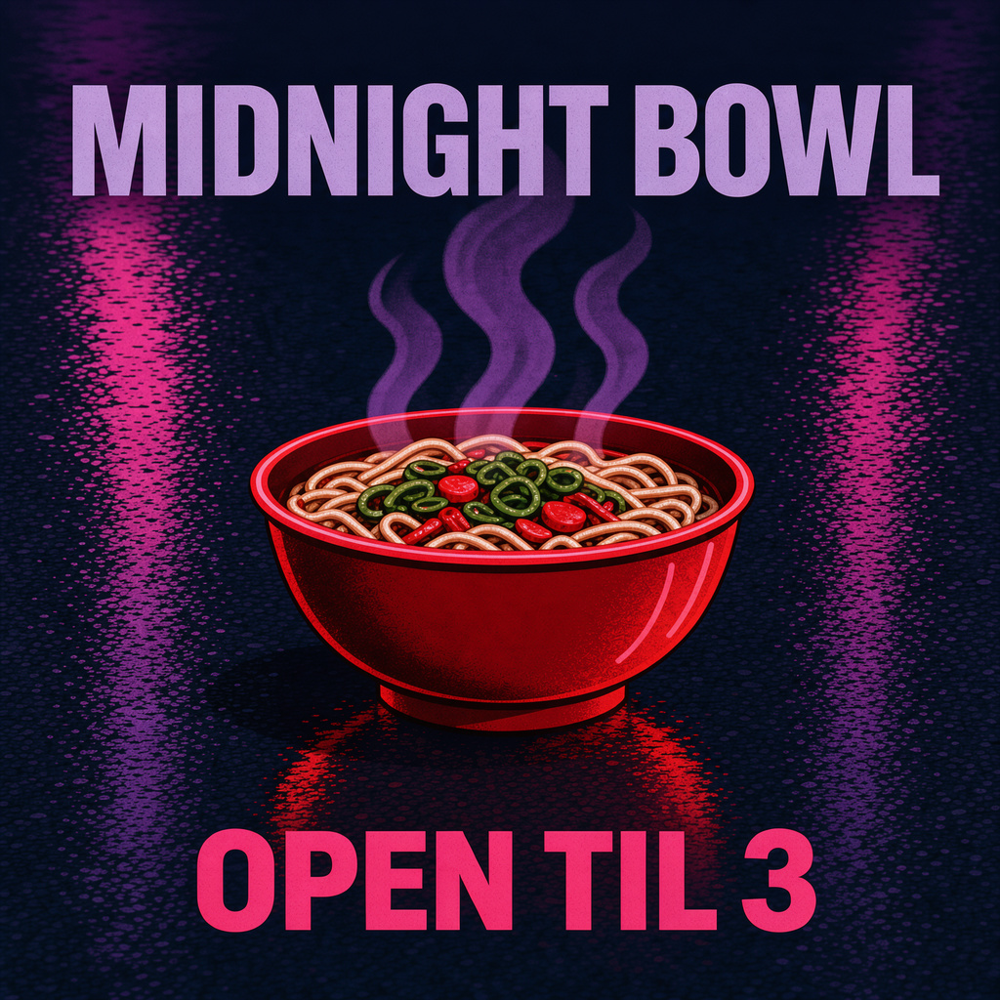

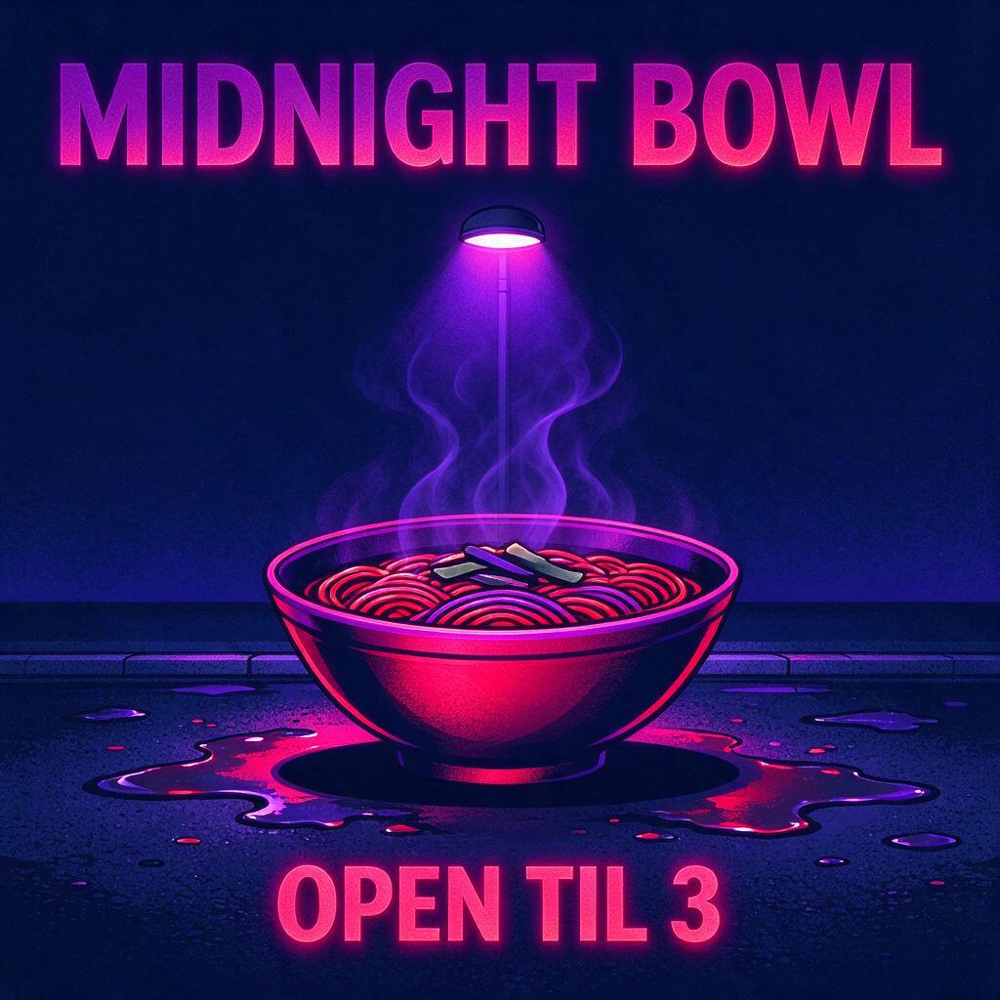

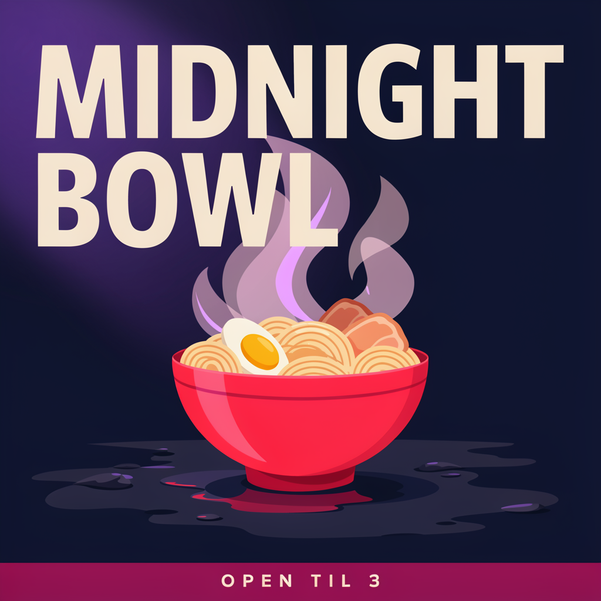

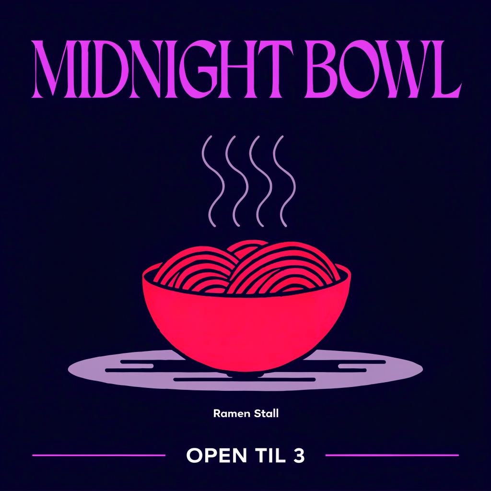
Inputs and run details
Shared poster brief
Create a square poster for a midnight ramen stall. Exact heading: MIDNIGHT BOWL. Exact footer: OPEN TIL 3. A single neon-red noodle bowl sits on wet asphalt under violet streetlight steam. Flat editorial illustration, navy and magenta palette, clear hierarchy, large readable type. No extra words or objects.
Open workflow ↗How it worksDownload workflowOriginal sampled graph
Grok Imagine 1.5 Lite vs HeyGen Video 1 vs MiniMax H3: same prompt, side by side
Grok Imagine Video 1.5 Lite: Black chopsticks haul a thick clump of wavy noodles out of a full bowl; violet steam and wet-asphalt purple reflections hold the whole shot. HeyGen Video 1: Starts on a nearly empty ridged bowl with purple/cyan rim light; chopsticks show mid-clip, then one translucent strand drops into magenta haze. MiniMax H3: One wooden chopstick lifts a single noodle strand from a matte-black bowl; magenta steam and rain beads read sharp at 1440p.
Inputs and run details
Shared video brief
Cinematic night product shot of a matte-black ceramic ramen bowl on wet asphalt. Violet neon rim light and magenta steam curling upward. A single chopstick lifts one glossy noodle strand in slow motion. Shallow depth of field, rain droplets catching light, locked low-angle camera with a gentle push-in. Dark editorial look, no text, no logos, no extra props.
Open workflow ↗How it worksDownload workflowOriginal sampled graph
One idea, three shots, one short film
GLM 5.3 Flash plans three shots around one hero, a yellow paper boat, and writes a separate prompt for each shot. Seedance 1.5 Pro renders three silent 5-second 720p clips, and Combine joins them into one 15-second film. Shot 1: a hand sets the boat into a neon-lit gutter. Shot 2 restarts the launch with two hands, then the boat drifts down the gutter past pink and teal reflections. Shot 3: it floats from a stone channel out onto a sunrise harbor. The boat looks the same in every shot. The cuts are hard, and the film has no sound.
1. Shot planner: hero, style and three shots · reported $0.00015
HERO: A tiny hand-folded bright yellow paper boat, small as a child's palm, crisp folded creases, slightly dampened at the bow. STYLE: 35mm film look with soft grain, deep night blues and purples cut by neon pinks and oranges warming to golden sunrise, shallow depth of field, anamorphic lens flares, wet reflective surfaces. SHOT 1: Extreme close-up at gutter level, a child's hand lowers the yellow paper boat into a rushing rain-filled gutter beside a curb; camera slowly pushes in as fingers release and the current catches the boat, neon signs reflecting in the dark water around it. SHOT 2: Low tracking shot gliding alongside the boat at water level as it races down the gutter channel, camera moving parallel in a steady lateral dolly; rain streaks fall and the boat bobs and tilts through splashes, weaving past glowing pink and cyan reflections stretching across the wet asphalt. SHOT 3: Wide shot from behind and slightly above as the gutter empties into a calm harbor; camera cranes up slowly as the yellow paper boat drifts out onto still water, the rising sun painting the sky gold, its small silhouette growing peaceful against the vast glowing horizon.
Inputs and run details
Film idea
A tiny yellow paper boat's first voyage: a child's hand sets it into a rain-filled gutter on a neon-lit city street at night, it races through the rushing water past glowing reflections, and finally drifts out onto a calm harbor as the sun rises.
Open workflow ↗How it worksDownload workflowOriginal sampled graph